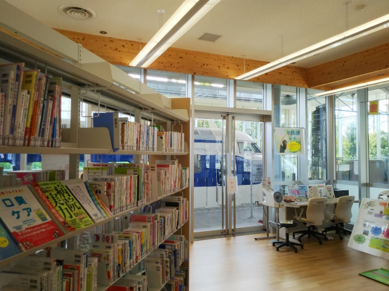
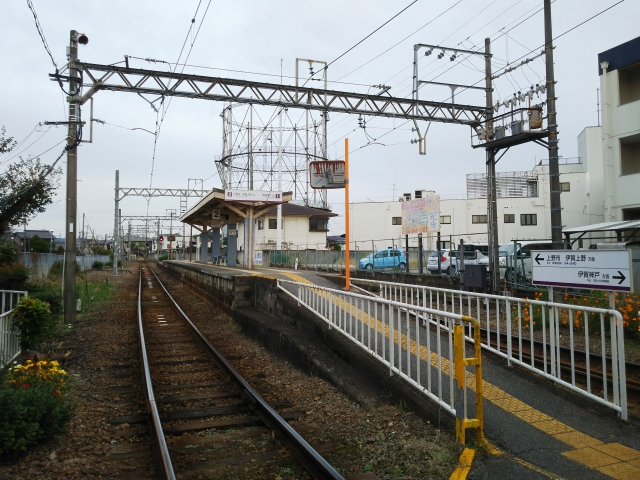

2021（R3）10月24日 健都ライブラリと伊賀鉄道
「秋の乗り放題パス」の最後の１日が残ってたので、子どもの頃家族と行った伊賀に行ってみました。。
といいつつ、素直に伊賀に行くわけでもなく・・・
吹田にやってきました。
貨物駅のそばが緑道になってて、いい散歩コースに
なってます。

元吹田操車場の跡地を再開発してできた「健都」に
出来た新しい図書館にやって来ました。
あれ？右の方に見えるのは・・・
じゃじゃ～ん！ゼロ系です。
昔、吹田貨物駅の端に置かれてたやつですね。
図書館利用者は自由に見学できます。
車内は半分が椅子を取り外して、鉄道の街吹田をア
ピールする写真が並んでます。

半屋内のいい環境なので、きれいなまま保存されて
いきそうですね。
では伊賀に向かいます。
おおさか東線→片町線というマニアックなルートで
向かいます。
新大阪のおおさか東線ホームでみかけた２０１系。
この車両も、見かけなくなってしまいましたね。
木津に到着。
奈良線の２０５系がやって来ました。この車両も、
時間の問題っぽいですね。
木津駅の端のほうは、昔のまま残ってました。
マニアックなルートと言いましたが、伊賀から木津
経由の片町線というのは、大昔、関西鉄道が走って
いた名阪のメインルートになりますね。
加茂に到着。ここからは非電化区間なので、ちっち
ゃいディーゼルカーに乗換えです。
関西線は本線規格なので、ちっちゃいディーゼルカ
ーには不釣り合いな構内構造の駅が続きます。
特急の通らない「見捨てられた本線」ゆえに、昔の
姿が残ってて貴重です。
伊賀上野駅に到着。右に見えるのは、伊賀鉄道のよ
うです。
古い駅には似合わんポップな電車が停まってます。
振り返るとちっちゃいディーゼルカー。やっぱこっ
ちのほうがこの駅には似合うな。
改めて伊賀鉄道。ふくろう？のデザイン？
またありがちな元東急車両かと思いきや、内装は一部クロスシートに改
造されてました。
こーゆー改造は歓迎です。
伊賀鉄道の中心駅の上野市に到着。
車庫も併設された、こじんまりとしたいい駅です。
しかし派手なデザインやなぁ。
この車両のデザインは、上野城と俳聖殿やね。
進入禁止マークがついてるのは、このドアが使えな
いようにしてるということでした。
ドアのまま、使えんようにしてるのって、ありそう
で無いなぁ。
上野市から、終点の伊賀神戸を目指します。
伊賀神戸に到着。
昭和３９年まで、この先、名張まで路線が繋がって
ました。
近鉄に合併されずに独立したままやったら、廃止に
いたらず、経営に貢献する区間になってたかも・・・
駅のまわりはなにもなく、すぐ引返します。
上野市に戻ります。よさげな駅舎のあった、茅町駅
で降りてみます。
車体に書かれた、サインのようなものは、松本零士
のサインです。
車体のデザインを松本零士がやった縁のようです。

上野市駅まで戻ってきました。
併設の車庫です。ちっちゃいなぁ。
駅前には俳聖・松尾芭蕉の像が。
松尾芭蕉はここ伊賀上野の出身です。
伊賀上野のもうひとつの名勝が、鍵屋ノ辻です。
寛永年間に実際に、日本三大仇討ちの一つのあった所です。
名作『伊賀越道中双六』は、この仇討を元に書かれています。
家族と来たときは、そんな背景もよくわからんまま、この道しるべで撮っ
た写真が残ってます。
４０年ぶりに来たけど、全く覚えてなかったなぁ。
伊賀鉄道をひととおり堪能して、帰路につきます。上野市駅はいい駅舎な
んですが、なぜか「忍者市駅」になってた・・・
いきしなには降りれなかった伊賀上野駅。
もちろん無人駅です。